Human Physiology · 6131
Module 1 — Cellular Physiology
Topics: 1.1 Cell Structure & Function • 1.2 Membranes & Transport • Sync Session 1
| 📖 How to Use These Notes |
| Lecture banners mark the start of each recorded lecture — follow along with the videos |
| 🎙 Callouts = direct insights or key phrases from the instructor's transcript |
| ★ Tips = exam-relevant content or concepts the instructor told you to prepare for sync |
| Figures are taken directly from the module's slide decks |
| Each lecture ends with its own Quick-Reference Glossary |
| Watch the assigned Khan Academy cell-introduction video before the Cellular Physiology lecture |
| TOPIC 1.1 — LECTURE 1 |
| Homeostasis |
1. What Homeostasis Is
🎙 Goldilocks analogy: not too hot, not too cold — the body wants the middle ground, the status quo. (She is probably guilty of breaking and entering, theft, and destruction of property, but it's a good analogy.)
Definition (from the text): the maintenance of nearly constant conditions in the internal environment.
★ The instructor's words: circle it, tape it to your wall, set it as your desktop background. Homeostasis is the recurring theme of health and disease for this entire course.
Everyday examples: blood pressure and body temperature held at set points.
2. Disease and Compensation
Disease = a state of disrupted homeostasis (text definition). Causes: infection, mutation, imbalance — flu (viral), sepsis (bacterial), cancer (DNA damage → mutation).
The body compensates: fever with viral infection (kill the virus, aid immune cells); raised blood pressure in kidney disease (restore excretion); and the PT example — after knee surgery (e.g., ACL reconstruction), joint inflammation and effusion trigger mechanoreceptors that inhibit the quads, possibly a defense mechanism to stop movement during injury.
3. Control Systems
Hundreds exist — some within organs, some across systems. Lecture examples:
Oxygen: hemoglobin binds O2 at its heme groups and releases it where tissue O2 is low, keeps it where O2 is plentiful.
CO2: accumulation → increased breathing rate → CO2 expelled through ventilation.
Blood pressure: baroreceptors in vessel walls sense stretch → brain signals vasodilation (or constriction).
4. Negative and Positive Feedback
| Negative feedback | Positive feedback |
| Returns the factor toward a mean value — maintains homeostasis | Amplifies the stimulus — wants more of what started |
| 'Negative' means opposite the stimulus, not 'decrease': high BP is lowered AND low BP is raised | Childbirth: head pushes cervix → nerve impulses → hormones → stronger contractions → loop |
| Applies to temperature, blood sugar, BP — anything with a set point | Blood clotting: once started, the process self-reinforces |
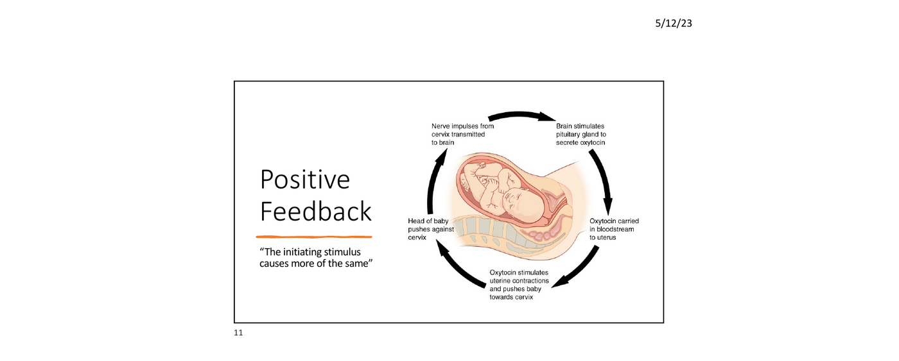
Positive feedback: the childbirth loop (Homeostasis deck)
Gain — how good is the correction?
Gain = correction ÷ error. Text example: baseline BP 100 mmHg; a transfusion that would push a receptor-less system to 175 lands at 125 with baroreceptors intact. Correction = 50, error = 25, gain = −2.
The point: control mechanisms are imperfect — they keep values closer to normal, not exact.
★ Come to the sync session prepared to discuss control mechanisms — the instructor says this directly.
Homeostasis — Quick-Reference Glossary
| Term | Definition |
| Homeostasis | Maintenance of nearly constant conditions in the internal environment |
| Set point | The target value a controlled variable is regulated around |
| Disease | A state of disrupted homeostasis |
| Compensation | A body response that offsets disrupted function (fever, BP rise, muscle inhibition) |
| Baroreceptor | Vessel-wall pressure sensor driving BP regulation |
| Negative feedback | Response opposite the stimulus, returning toward the set point |
| Positive feedback | Response amplifying the stimulus (childbirth, clotting) |
| Gain | Correction ÷ error — how effective a control system's correction is |
| TOPIC 1.1 — LECTURE 2 |
| Cellular Physiology |
1. Scale and Cell Types
The cell is the basic living unit; tissues and organs are collections of many cell types.
Scale: smallest visible object ~0.1 mm; grain of salt 0.3 mm; grain of rice ~6×2 mm; coffee bean ~12 mm. Cells: 1 to hundreds of μm, average ~100 μm; 1,000 μm = 1 mm.
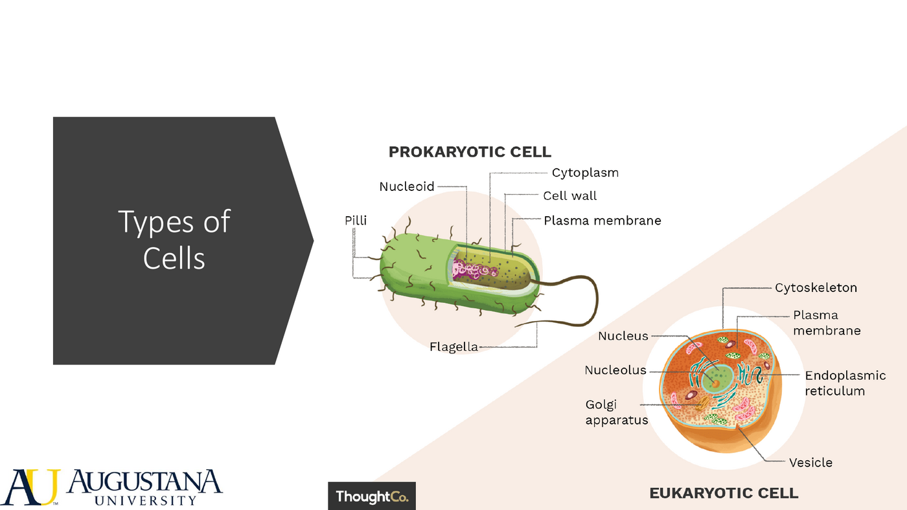
Prokaryotic vs eukaryotic cells (Cellular Physiology deck)
Human/animal cells are eukaryotic: definitive plasma membrane, definitive nucleus, organelles. Prokaryotic cells (bacteria, algae) lack these.
2. Cell Structure — the House Analogy
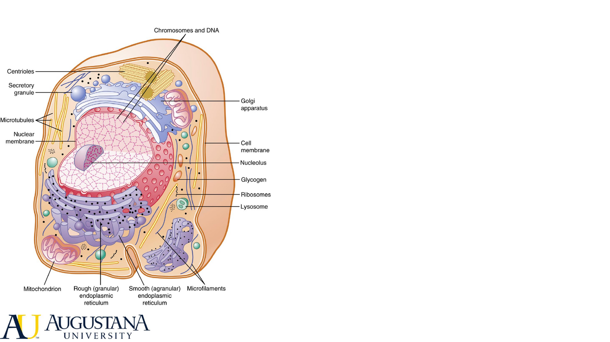
The cell and its organelles (Cellular Physiology deck)
| Organelle | House analogy | Function |
| Cell membrane | The house wall | Boundary; protein channels are the doors and windows (Na+, K+, glucose in/out) |
| Cytoplasm | The air inside | Fluid medium containing ions |
| Nucleus | The office | DNA/chromosomes — all the blueprints; contains the nucleolus |
| Nucleolus | — | Generates ribosomes |
| Ribosomes | — | Convert/transport mRNA toward protein |
| Rough ER | The workshop / kitchen | Ribosome-studded; builds proteins and amino acids |
| Smooth ER | — | Lipids, cholesterol, phospholipids, some steroid hormones |
| Golgi apparatus | The garage | Packages and ships vesicles (proteins, lipids, hormones); exocytosis = taking out the trash |
| Lysosomes | The Roomba | Vesicles that break down molecules and junk inside the cell |
| Mitochondria | The utility closet | The powerhouse: glycolysis, Krebs cycle, electron transport chain → ATP |
3. Membrane Transport
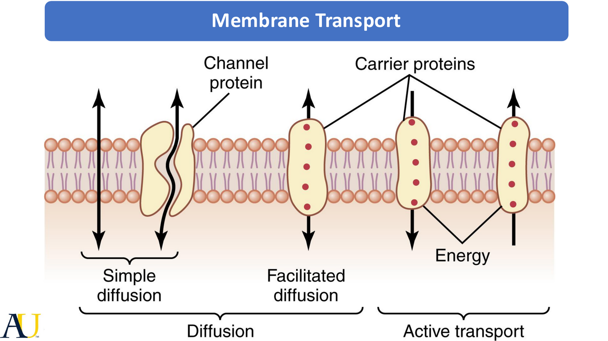
Simple diffusion, facilitated diffusion, and active transport (Cellular Physiology deck)
Endocytosis — material in: pinocytosis (small), phagocytosis (large; e.g., a macrophage engulfing debris); lysosomes digest and expel the remains.
Simple diffusion — O2 and CO2 cross freely. Facilitated (carrier-mediated) diffusion — needs a carrier protein. Active transport — against a gradient; costs ATP.
Diffusion is driven by concentration, electrical charge, and pressure gradients.
4. Osmosis, Osmolarity, Tonicity
Osmosis — water moves across a semipermeable membrane toward the higher solute concentration (solute particles disperse water and block its exit). Why salty food makes you thirsty — and the basis for renal and GI water handling later.
Osmolarity — concentration of particles. Osmotic pressure — the pressure needed to stop net water movement.
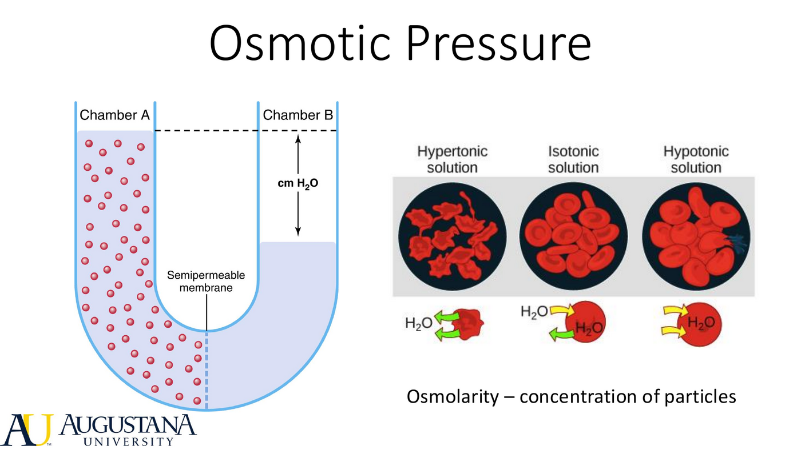
Osmotic pressure and tonicity: hypertonic, isotonic, hypotonic (Cellular Physiology deck)
| Solution | Outside vs inside | Water moves... | Result for the cell |
| Isotonic | Balanced | No net movement | Stable — what cells need |
| Hypertonic | Higher concentration outside | Out of the cell | Shrivels |
| Hypotonic | Lower concentration outside | Into the cell | Swells / can burst |
5. Selective Permeability and the Na+/K+ Pump
Channels choose their traffic: sodium channels admit essentially only Na+, calcium channels only Ca2+. Gating: voltage (electrical) or chemical (e.g., acetylcholine).
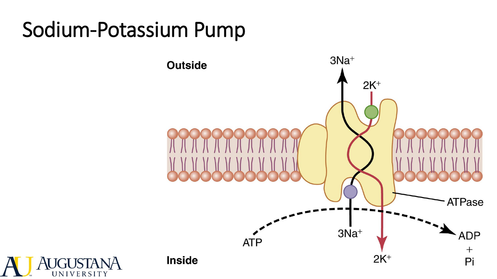
The sodium–potassium pump: 3 Na+ out, 2 K+ in, powered by ATPase (Cellular Physiology deck)
Na+/K+ pump — the most common primary active transport; keeps the inside of the cell relatively negative by swapping 3 Na+ out for 2 K+ in, powered by ATPase splitting a phosphate off ATP. Foundation for nerve conduction (later modules).
6. The Cell Life Cycle
Reproduction about every 10–30 hours when uninhibited; the split itself = mitosis. 46 chromosomes in 23 pairs; centrioles duplicate, migrate to opposite poles, and pull the chromosome material into two cells.
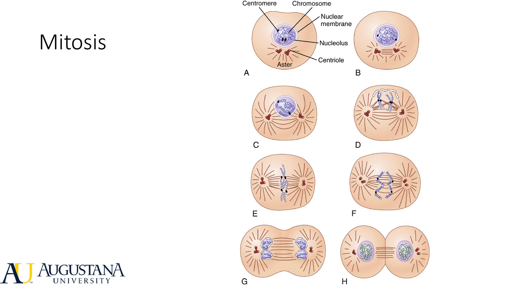
Stages of mitosis (Cellular Physiology deck)
Frequency varies: constant in bone marrow and skin; rare in smooth muscle; neurons don't reproduce after fetal life (neuroplasticity ≠ new neurons).
Differentiation — cells specialize by selective gene repression, and that repression is never undone: a white blood cell regenerates only as a white blood cell.
| Apoptosis | Necrosis |
| Programmed cell death — intentional self-destruction | Unintentional death from injury |
| A cascade disassembles the cell for macrophage cleanup | Chemical or physical damage overwhelms the cell |
| Reasons: no longer needed, abnormal (infection), maintaining balance | The cell cannot handle the stress |
Cellular Physiology — Quick-Reference Glossary
| Term | Definition |
| Eukaryotic / Prokaryotic | With nucleus + organelles (human) / without (bacteria, algae) |
| Nucleolus | Site of ribosome generation inside the nucleus |
| Rough / Smooth ER | Protein production with ribosomes / lipid and hormone production |
| Golgi apparatus | Packages and transports vesicles; exocytosis exports material |
| Lysosome | Intracellular vesicle that breaks down molecules |
| Pinocytosis / Phagocytosis | Endocytosis of small / large material |
| Facilitated diffusion | Carrier-protein-assisted passive transport |
| Active transport | Movement against a gradient using ATP |
| Osmosis | Water movement toward higher solute concentration across a membrane |
| Osmolarity / Osmotic pressure | Particle concentration / pressure needed to halt water movement |
| Isotonic / Hypertonic / Hypotonic | Balanced / higher-outside / lower-outside solute concentration |
| Na+/K+ pump | 3 Na+ out, 2 K+ in via ATPase — keeps the cell interior relatively negative |
| Mitosis | Cell division; driven by centrioles pulling chromosome pairs apart |
| Differentiation | Specialization by permanent selective gene repression |
| Apoptosis / Necrosis | Programmed / unintentional cell death |
| TOPIC 1.2 — LECTURE 1 |
| Cell Injury and Healing |
1. Pathology vs Pathophysiology
Pathology — the structural and functional changes caused by disease or trauma. Pathophysiology — the process: the physiologic events associated with disease or injury. This course cares most about the process.
2. What Injures a Cell
Ischemia (blood-flow deprivation), infection (bacteria, virus, fungi), immune reactions (allergy, autoimmunity), chemical (toxins), genetic (mutation, cancer), mechanical stress (load exceeds tissue tolerance), nutritional (deficit or imbalance), physical trauma (nail, hammer, heat).
Modifiers: environment, physical activity (too much impairs healing; sedentary is no better — a little goes a long way), and psychosocial factors (beliefs, stress — they change tissue-adaptation thresholds; more in the pain courses).
3. Free Radicals and Antioxidants
Free radical — a molecule with an unpaired electron. Normal byproduct of energy production (oxidation); needed for inflammation and bacterial killing.
In excess: each radical steals an electron from a neighbor, creating a chain reaction that damages tissue. Promoters: poor nutrition, tobacco, UV, pesticides, drugs, prolonged unrecovered exercise. Linked to heart disease, stroke, diabetes, Alzheimer's, cancer, premature aging.
Antioxidants stabilize radicals by donating an electron — some endogenous, the rest from food (vitamin C, vitamin E, beta-carotene; 200+ substances).
4. The Injury Cascade and Adaptations
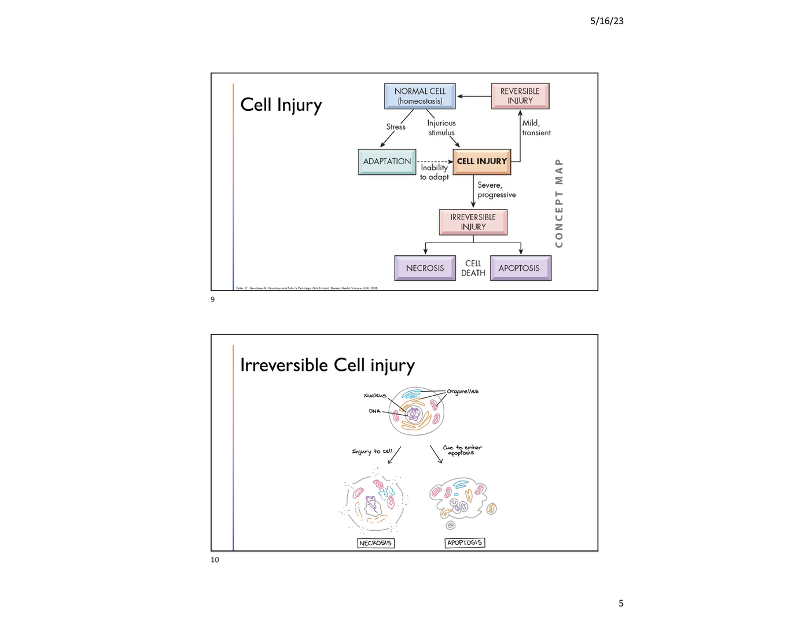
Cell injury concept map: adaptation → reversible → irreversible injury → necrosis or apoptosis (Cell Injury deck)
| Adaptation | What happens |
| Atrophy | Cells shrink/degenerate; organ may get smaller |
| Hypertrophy | Cell size increases (e.g., myocytes with training) |
| Hyperplasia | Cell number increases; organ enlarges |
| Metaplasia | Cell morphology changes (esophagus in reflux; lung in smoking) |
| Dysplasia | Abnormal cells appear and gradually increase |
★ Metaplasia and dysplasia are often prerequisites of, or associated with, cancer.
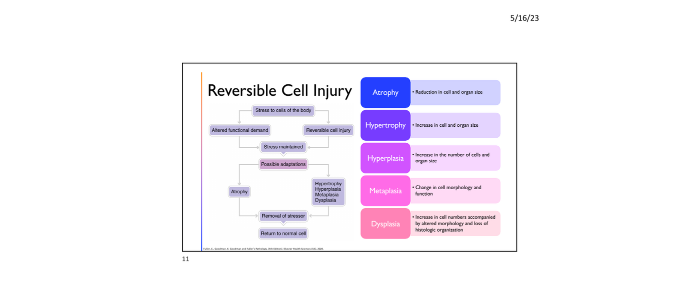
Reversible cell injury and the adaptation pathways (Cell Injury deck)
Aging: decreased capacity to respond to stressors; wear-and-tear accumulation (heart and brain regenerate poorly); senescence (dividing cells stop dividing); more free radicals.
5. Tissue Healing — Four Phases
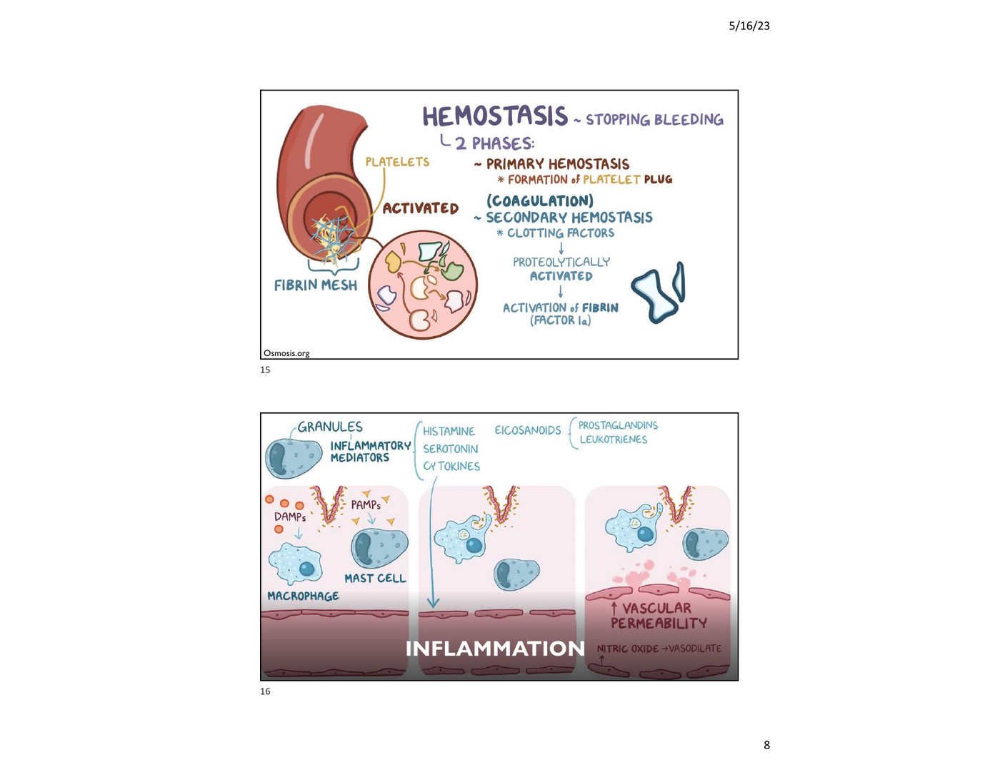
Hemostasis (platelet plug → fibrin mesh) and the inflammation phase (Cell Injury deck)
| Phase | Timing | What happens |
| 1. Hemostasis | Immediate | Primary: platelet plug. Secondary: clotting factors → fibrin mesh. Hematoma forms; affected cells die (degeneration) |
| 2. Inflammation | ~First 24 h → days | Removes injurious agents and debris; initiates healing (full detail next lecture) |
| 3. Proliferation | First days onward | Angiogenesis brings blood; fibroblasts rebuild with fibronectin (scaffold), proteoglycans (hydration), elastin (elasticity), collagen (strength) |
| 4. Remodeling / maturation | Weeks → months | Epithelial cells migrate through the extracellular matrix; tissue gets smoother and stronger; redness fades slowly |
★ Type III collagen arrives first in wound healing; type I collagen is the strong, mature form — the main component of most mature scars.
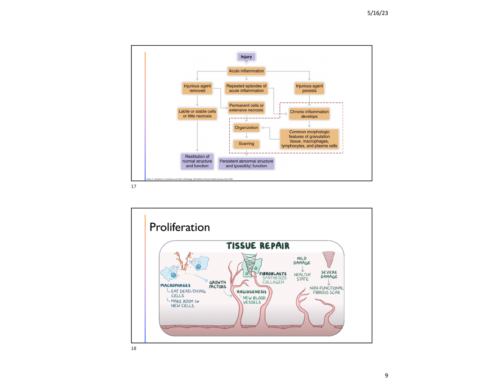
Chronic-inflammation pathway and the proliferation/tissue-repair phase (Cell Injury deck)
Chronic path: persistent injury, repeated acute bouts, extensive necrosis, or poorly regenerating cells → chronic inflammation, scarring, altered structure/function, nerve hypersensitivity, possible chronic pain without a painful stimulus.
6. Which Tissues Regenerate
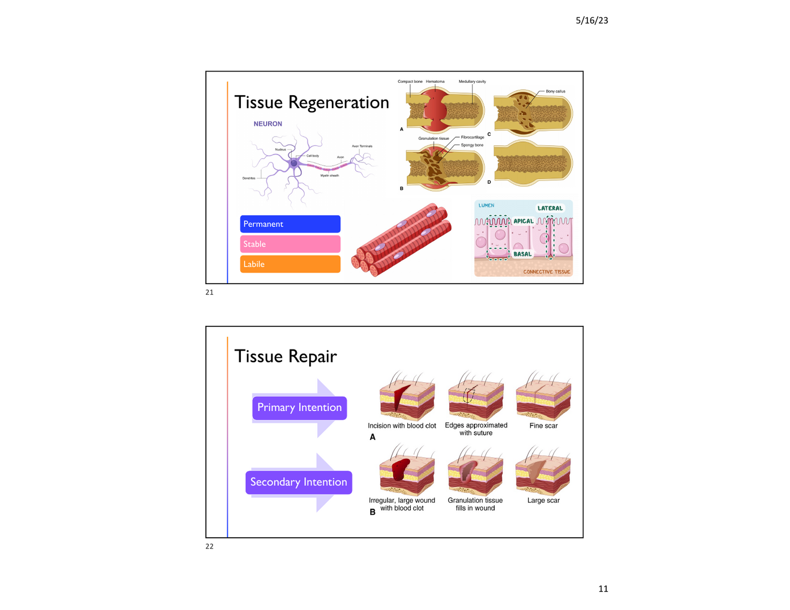
Tissue regeneration by type, and primary vs secondary intention (Cell Injury deck)
| Class | Behavior | Examples |
| Permanent | Doesn't regenerate after significant injury | Neurons (esp. peripheral), cardiac myocytes |
| Stable | Doesn't usually divide, but can after injury | Liver (can regrow), skeletal muscle |
| Labile | Always dividing; heals well | Skin/epithelium, GI tract, bone marrow |
Timeframes: bone ~6–12 weeks (reparation phase — cell roles are an example here, detailed in later lectures); tendon ~12–16 weeks.
| Primary intention | Secondary intention |
| Clean wound (surgical), edges approximated | Irregular/larger traumatic wound |
| Clean scar, heals well | Fills with granulation tissue (fibrin, elastin — scar rather than epithelium); more scarring |
Cell Injury & Healing — Quick-Reference Glossary
| Term | Definition |
| Pathology / Pathophysiology | Structural-functional changes / the physiologic process of disease or injury |
| Ischemia | Deprivation of blood flow — insufficient oxygen and nutrients |
| Free radical | Molecule with an unpaired electron; chain-reacts by stealing electrons |
| Oxidation | Electron addition/subtraction, often from oxygen molecules, in energy production |
| Antioxidant | Stabilizes a free radical by donating an electron (endogenous + dietary) |
| Atrophy / Hypertrophy | Smaller cells / larger cells |
| Hyperplasia | More cells |
| Metaplasia / Dysplasia | Changed morphology / abnormal cells increasing — both cancer-associated |
| Senescence | Normally dividing cells reach a non-dividing state with age |
| Hemostasis | Stopping blood loss: platelet plug, then coagulation/fibrin mesh |
| Angiogenesis | New capillary growth into healing tissue |
| Fibroblast | Repair cell producing the healing matrix |
| Fibronectin / Proteoglycans / Elastin / Collagen | Scaffold / hydration / elasticity / tensile strength |
| Granulation tissue | Scar-type fill of larger wounds (secondary intention) |
| Primary / Secondary intention | Clean approximated healing / granulation-filled healing with more scar |
| TOPIC 1.2 — LECTURE 2 |
| Inflammation |
1. Why This Matters to a PT
The same core concepts apply to a scraped knee, a sprained ankle, a biceps strain, and a brain injury. Triggers: pathogens, trauma, microtrauma from exercise, extreme temperatures, and every cell-injury cause from the last lecture.
Goal: respond to the stimulus and restore homeostasis — eliminate the cause, clear dead tissue, start repair.
2. Cardinal Signs
Four classic signs (since Roman times): heat, redness, swelling, pain — plus the later fifth, loss of function, largely a consequence of the others.
3. Pathogenesis — Three Simultaneous Components (first 24–48 h)
Hemodynamic changes
Smooth-muscle relaxation → vasodilation → blood floods the capillary network → redness, warmth, swelling (arterial blood is warm). Capillaries can't contract but dilate and are leaky: plasma and white cells slip between endothelial cells → inflammatory edema. Platelets then clog the openings ('leaves in the gutter') → flow slows and the area is walled off.
Humoral response — inflammatory mediators
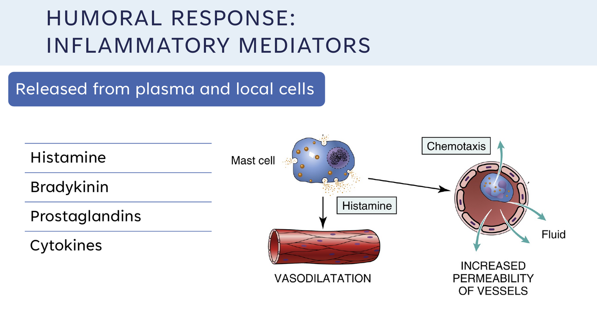
Inflammatory mediators: histamine from mast cells, vasodilation, chemotaxis (Inflammation deck)
| Mediator | Source | Action |
| Histamine | Mast cells | Vasodilation |
| Bradykinin | Plasma/local cells | Like histamine, over a longer duration |
| Prostaglandins | Local cells | Inflammatory signaling |
| Cytokines | White blood cells | 'Call for more help' |
Cellular response
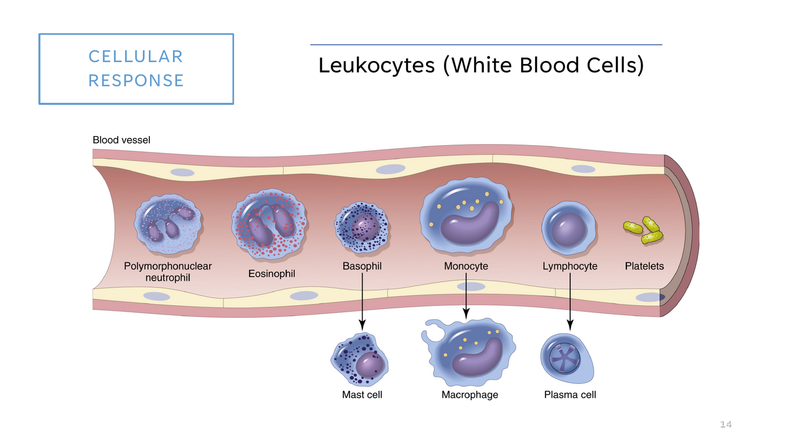
Margination of neutrophils, adhesion of platelets, pavementing (Inflammation deck)
Slowed, packed flow is useful: infection stays contained and resources concentrate. RBCs line up (rouleaux), platelets seal openings, white cells congregate and migrate through the endothelium.
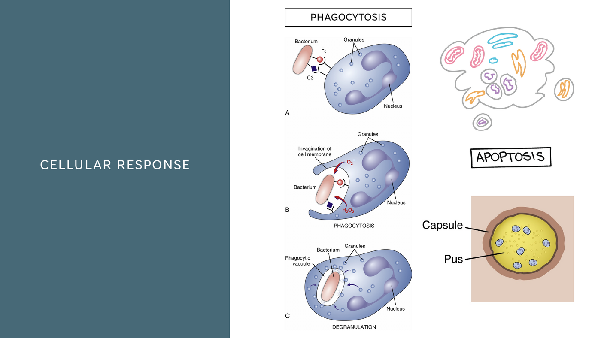
The leukocyte family — neutrophils, mast cells, macrophages and relatives (Inflammation deck)
Key cells for now: neutrophils (first responders, on patrol), mast cells (histamine), macrophages. Full family in immunology.
Chemotaxis — leukocytes follow the chemical gradient (cytokines, bacterial particles) and squeeze through the swollen endothelium to the source.
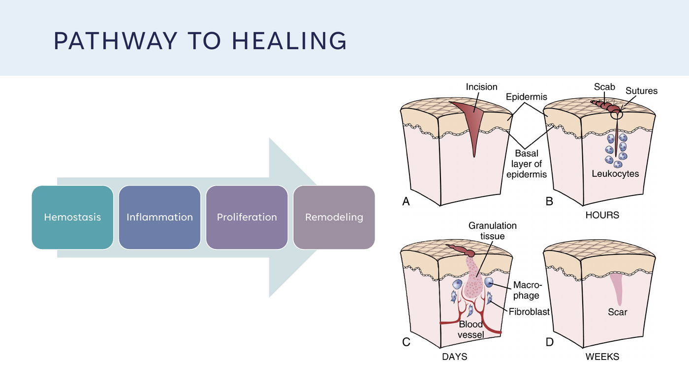
Phagocytosis, apoptosis of spent cells, and pus (Inflammation deck)
Phagocytosis — neutrophils and macrophages engulf and neutralize debris/bacteria, then self-destruct by apoptosis. Accumulated spent cells = pus, the sign of a substantial infection being fought.
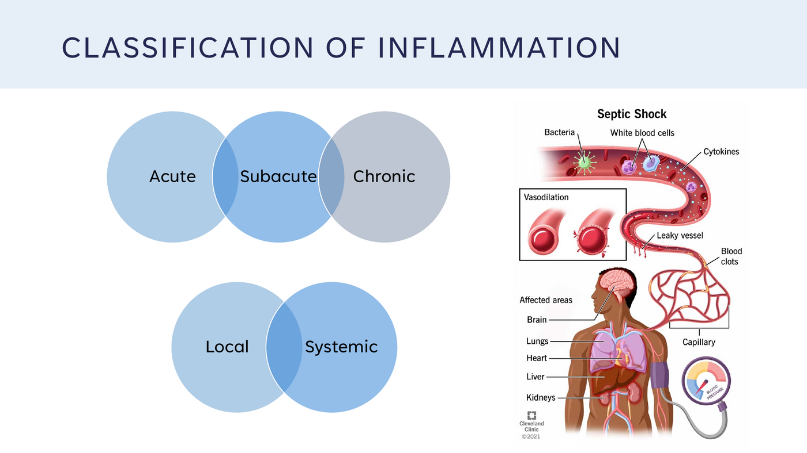
From injury to healed tissue: the pathway through inflammation (Inflammation deck)
4. Classifying Inflammation
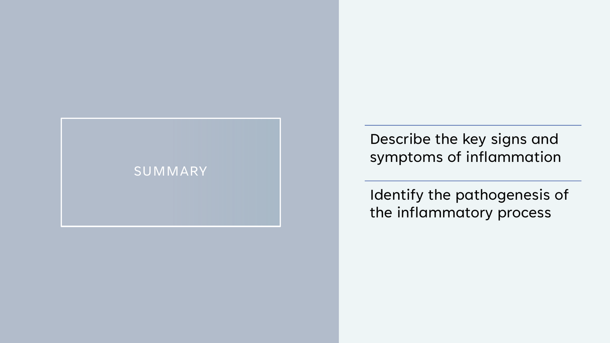
Acute–subacute–chronic and local–systemic classification; septic shock (Inflammation deck)
| Acute | Chronic |
| Hours to first 24–48 h | Weeks to months |
| High blood flow, vasodilation | Less immediate vasodilation |
| Neutrophil-dominant | More macrophages and other cells |
Subacute sits between — definitions vary between courses.
| ⚕ Clinical Spotlight — Systemic Inflammation (Sepsis) |
| Bacteria escape local containment into the bloodstream → the immune response goes global and can over-respond. |
| Widespread vasodilation + vessel permeability → blood pressure drops; increased coagulation → clotting that starves vital organs (heart, lungs, brain) of flow. |
| Systemic inflammation of this kind can be fatal — it is why sepsis is an emergency. |
Inflammation — Quick-Reference Glossary
| Term | Definition |
| Cardinal signs | Heat, redness, swelling, pain (+ loss of function) |
| Vasodilation | Vessel widening from smooth-muscle relaxation — drives redness and warmth |
| Inflammatory edema | Swelling from plasma leaking through permeable capillaries |
| Histamine / Bradykinin | Mast-cell mediator / longer-acting counterpart — both vasodilate |
| Cytokines | WBC-released signals recruiting more immune cells |
| Rouleaux | Alignment of red blood cells as flow slows |
| Chemotaxis | Migration of leukocytes along a chemical gradient |
| Neutrophil | First-responder white blood cell |
| Mast cell / Macrophage | Histamine source / large phagocyte |
| Phagocytosis | Engulfing and neutralizing debris or bacteria |
| Pus | Accumulation of spent white blood cells after heavy phagocytosis |
| Acute / Subacute / Chronic | Hours–days / in between / weeks–months |
| Local / Systemic | Confined to the injury site / body-wide (e.g., sepsis) |
| Sepsis | Systemic infection response: vasodilation + permeability → falling BP, clotting, organ hypoperfusion |
| MODULE 1 |
| Sync Session 1 — Cellular Physiology |
Sync scenario documents (Scenarios 1–3) are in the course files for breakout discussion.
★ Prepare to discuss control mechanisms (negative and positive feedback, gain) — the Homeostasis lecture assigns this directly.
Sources: Module 1 lecture transcripts and slide decks (Evan Andreyo, PT, DPT — Board-Certified Orthopaedic and Sports Clinical Specialist), Sync Session 1 scenarios — Augustana University Physical Therapy Program, Human Physiology (DPTH 6131), Module 1. Figures reproduced from the module slide decks.